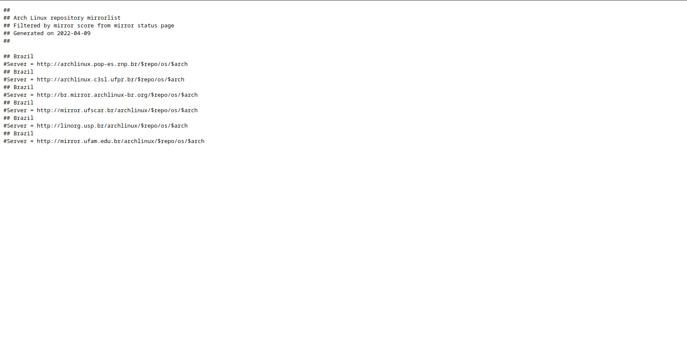

Mirrorlist é onde fica a localização dos servidores de onde serão baixados os pacotes instalados pelo pacman podemos alteralo de forma bem simples, executando o comando como root: nano /etc/pacman.d/mirrorlist (OBS: aqui irei utilizar o nano mas pode utilizar o editor que preferir), já iremos poder ver os servidores dos pacotes, para atualizar está lista podemos utilizar uma ferramenta do próprio site do Arch chamada Pacman Mirrorlist Generator.
Recomendo marcar a opição de utilizar mirrorlist status para que você tenhas certeza de que os links estejam funcioando
Após clicar em gerar lista você terá uma tela semelhante a está:
Agora é somente copiar todas as linha e copialas para o arquivo /etc/pacman.d/mirrorlist, caso esteja na instalação do Arch e não possua interface gráfica você pode usar o lynx.
Para isso execute o comando: lynx https://archlinux.org/mirrorlist e selecione as opições como faria em qualquer navegador, após ter gerado a mirrolist, precione P no teclado, selecione a opição para salvar local, e mude o nome para um nome fácil para você lembrar depois, agora execute o seguinte comando como root: cat NOME_DO_ARQUIVO > /etc/pacman.d/mirrolist, não se esqueça de descomentar todos os servidores para que tudo funcione normalmente.
Após ter modificado o arquivo MIRRORLIST, precisamos atualizar a lista de pacotes do Arch executando o seguinte comando como root: pacman -Sy, se você fez corretamente tudo deve estar funcionando.